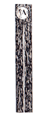

PARTIAL CIRCUMCISION
Traditional time tested cures of partial circumcision, dorsal slit,
or frenular incision are rarely recommended by modern doctors.
Modern technical engineering and plastics have enabled pro circ
doctors to develop and proliferate modern methods for performing
full circumcision on even the tiny infant penis. The Tara Clamp
has recently been added to Plastiibell and gomco clamp and is praised
as being able to perform the "perfect" cut.
Partial circumcision is a far simpler method (e.g. a clamp to
trap the glans inside before guillotining off the overhang of the
foreskin), and together with dorsal slit and frenular incision they
are fully efficient methods of treating foreskin conditions.
Split Wooden Slab
|
Circumcision Guards Used Traditionally
Among the Turkish and Jewish Peoples |
Perforated Plate |
Jewish Barzel | |
|

Split Reed |
Bryk p.245 "... there is a certain routine in circumsectio in leaving the glans intact. We observe various ways among various
peoples of separating off the protracted foreskin from the rest
of the skin covered penis. Sometimes it was marked with a nail,
sometimes a clamp is used, sometimes it is even tied off with a
string.
right - Medical circumcision around 1930 |
|
If you want a partial circumcision my advice is : Find a Jewish
Doctor
I love simple answers and here is one. wish Id have realised 6 years
ago when I wanted a partial circ. it must be right ... find a Jewish
doctor.
The doctors who are practised and perfected with partial circumcision
are Jewish doctors. The Jewish circumcision is a partial circumcision.
Its not only 8 day old children who are circumcised its every convert
or intermarried adult. And they have simple (because 5000 yrs ago things
were) and obviously tried and tested methods
There are even added advantages, .. you will certainly receive a
respectful caring (even religious) attitude from your doctor, possibly even with interest
in sexual problems you've had ...
Go to your local Jewish hospital - (cities often have one) - or you need to get in touch with your local synagogue who I feel sure they would welcome the question, then this operation for the Jews is at the basis of the covenant with God, (the primary bond between the Jews and God, infact the bond which made them, as far as they were concerned, "Gods people")
_____________________________________________________________
personal
report on partial circumcision
For the first ten days after the operation the stitches will be
uncomfortable as they dig in to the glans - in addition it will
be advisable to retract the foreskin every day to prevent skin bridges
from forming. (see post
circumcision problems for further discussion). |